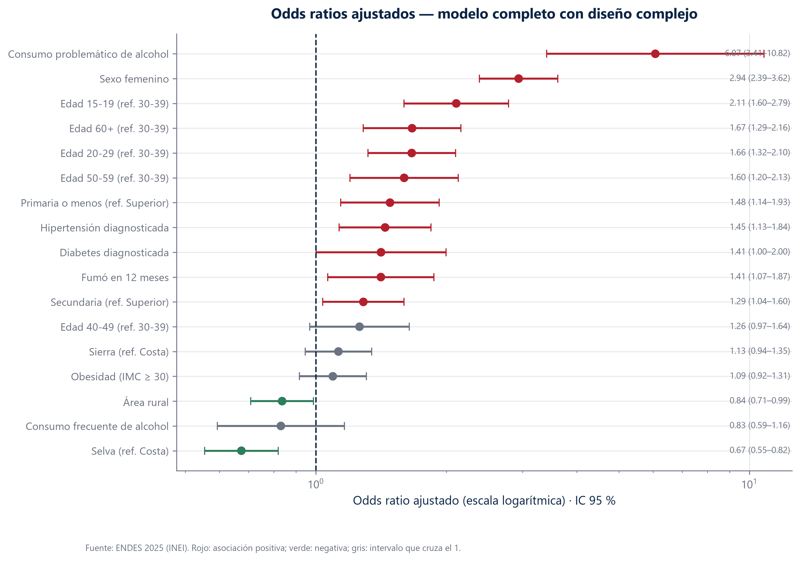
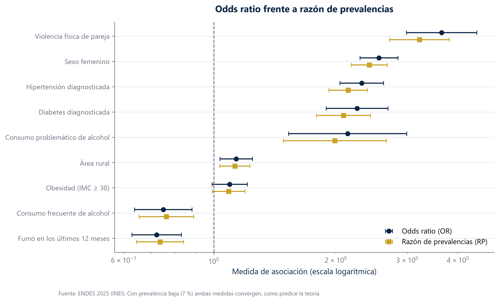

Qué se asocia con la depresión
Los datos dicen que fumar protege contra la depresión. Es falso, y la explicación de por qué es el mejor ejemplo de este boletín.
La paradoja del tabaco
Si se comparan sin más las personas que fumaron en el último año con las que no, salen estas cifras: entre quienes fumaron, el 5,1 % tiene sintomatología depresiva; entre quienes no, el 7,0 %. El odds ratio es 0,83, claramente por debajo de 1. Leído literalmente, fumar protegería.
Ahora miremos quién fuma. En el Perú, fumar es mucho más frecuente entre hombres. Y los hombres tienen menos de la mitad de sintomatología depresiva que las mujeres. Así que al comparar fumadores con no fumadores estamos comparando, en buena medida, hombres con mujeres.
Cuando se separa el análisis por sexo y se comparan fumadores con no fumadores dentro de cada grupo, el resultado se da la vuelta: el odds ratio ajustado es 1,44. Fumar se asocia con más sintomatología, no con menos.
Ajustar no es un trámite: en algunos casos cambia el signo del resultado
Antes de comparar dos grupos hay que descontar aquello que los diferencia por otras razones. Cada barra mide cuánto se mueve el resultado al hacerlo: si se mueve más de un 10 %, la variable descontada estaba distorsionando la comparación. Muchas lo superan. La hipertensión cambia un 41 % al tener en cuenta la edad, y el consumo problemático de alcohol un 40 % al tener en cuenta el sexo.
- Cada barra es un par: un factor de riesgo y algo que podía estar distorsionando su medición, como la edad o el sexo.
- El largo dice cuánto cambia el resultado al descontar esa distorsión. Más largo, más engañaba la comparación cruda.
- El 10 % es el umbral convencional: por debajo se considera que la distorsión no era relevante.

El panorama completo
El consumo problemático de alcohol multiplica por seis las probabilidades
Es el factor más fuerte del modelo, por delante del sexo femenino. Vivir en la selva aparece del otro lado: se asocia con menos sintomatología que vivir en la costa. Los puntos grises son los que no permiten concluir nada, porque su rango de incertidumbre incluye el valor sin efecto.
- La línea vertical punteada marca el 1: ahí no hay ninguna asociación.
- Un punto a la derecha del 1 indica más probabilidad de sintomatología; a la izquierda, menos.
- La línea horizontal de cada punto es el margen de error. Si cruza el 1, los datos no permiten afirmar que exista asociación.

Dos formas de medir lo mismo
El odds ratio exagera, pero aquí exagera poco
Hay dos maneras de expresar cuánto más frecuente es algo en un grupo que en otro, y no coinciden: el odds ratio siempre se aleja más del 1 que la razón de prevalencias, y la diferencia crece cuando la condición es frecuente. Con un 7 % de prevalencia, la teoría dice que deberían parecerse. Y se parecen: la exageración media es del 5,3 %. Comprobarlo con los propios datos es más honesto que citarlo de un manual.
- Cada punto es un factor medido de dos formas distintas: una en el eje horizontal, la otra en el vertical.
- La diagonal marca dónde caerían si ambas coincidieran. Cuanto más se separa un punto de esa línea, más difieren las dos maneras de contar lo mismo.
- Aquí casi la tocan, que es lo esperable cuando la condición afecta a poca gente.

Cuándo un efecto no es igual para todos
Con 30 000 observaciones, las pruebas estadísticas detectan diferencias mínimas. De las 30 combinaciones que examinamos, 13 salían «significativas». Eso no significa que 13 sean relevantes.
Por eso exigimos tres condiciones a la vez: que la diferencia siga siendo significativa tras corregir por el número de pruebas, que los odds ratios de los dos grupos difieran al menos vez y media, y que ambos grupos tengan casos suficientes. Sobreviven 3.
| Exposición | Difiere según | Cuánto difieren | Casos en la celda más pequeña | p corregido |
|---|---|---|---|---|
| Fumó en 12 meses | Sexo | 1.97 | 110 | 0.00 |
| Obesidad (IMC ≥ 30) | Sexo | 1.54 | 69 | 0.01 |
| Hipertensión diagnosticada | Nivel educativo | 1.96 | 35 | 0.02 |